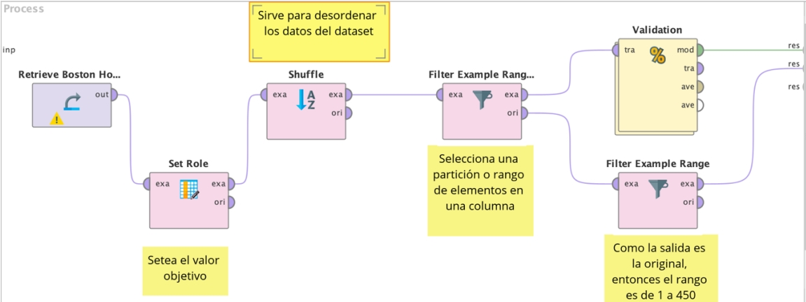
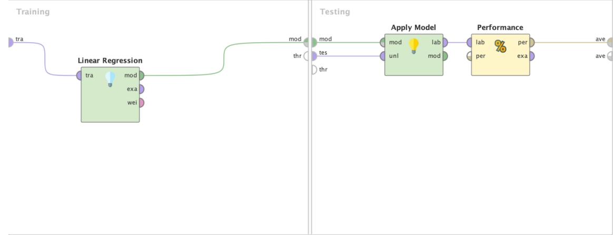
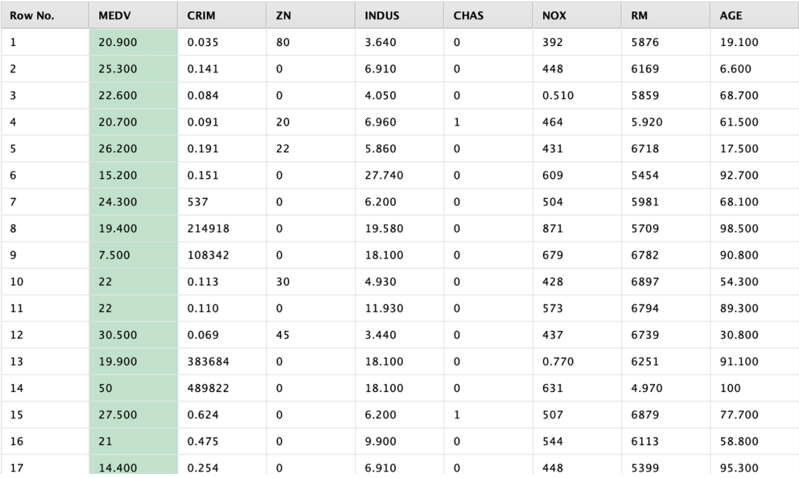
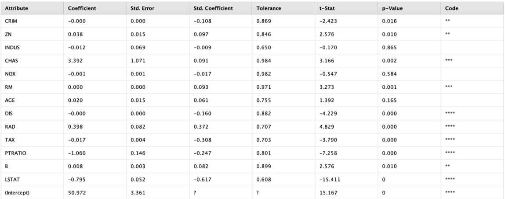

Descripción del Proyecto
Los objetivos de este proyecto son:
1. Identificar cuáles atributos, entre los varios disponibles,son necesarios para predecir con exactitud la mediana de precios de una casa
2. Construir un modelo de regresión lineal múltiple para predecir la mediana de los precios utilizando los atributos más importantes
3. Evaluar la exactitud del modelo para predecir nuevos ejemplos
Debido a la naturaleza del enfoque de ajuste de funciones, una limitación importante que encontramos tiene que ver con la dimensionalidad. A medida que la cantidad de atributos o predictores crece, se reduce nuestra capacidad para obtener un buen modelo, pero además se agrega complejidad computacional y también se hace más difícil la interpretación del modelo. Revisaremos aquí algunos métodos de selección de características “feature selection” que permitan reducir el número de predictores al mínimo posible sujeto a obtener un buen modelo. Utilizando RapidMiner, veremos cómo realizar la preparación de los datos, la construcción del modelo y la validación. Finalmente revisaremos que se cumplan algunos requerimientos para asegurar que la regresión lineal se utiliza correctamente.
Contexto y significado de cada atributo del dataset:
CRIM: tasa de criminalidad per cápita por ciudad.
ZN: proporción de terrenos residenciales zonificados para lotes mayores a 25,000 pies cuadrados.
INDUS: proporción de acres de negocios no minoristas por ciudad.
CHAS: variable ficticia del río Charles (1 si la zona limita con el río; 0 en caso contrario).
NOX: concentración de óxidos nítricos (partes por cada 10 millones).
RM: número promedio de habitaciones por vivienda.
AGE: proporción de unidades ocupadas por sus propietarios construidas antes de 1940.
DIS: distancias ponderadas a cinco centros de empleo de Boston.
RAD: índice de accesibilidad a carreteras radiales.
TAX: tasa de impuestos a la propiedad por cada $10,000.
PTRATIO: ratio de alumnos por maestro por ciudad.
B: 1000(Bk - 0.63)^2, donde Bk es la proporción de personas de raza negra por ciudad.
LSTAT: porcentaje de población de menor estatus socioeconómico.
MEDV: media de las viviendas ocupadas por sus propietarios en miles de dólares.
Tipos de datos y rangos:
Todos los tipos de datos son numéricos “reales regulares”.
Los rangos varían en todas las columnas:
ZN: 0 – 100
INDUS: 0.460 – 27.740
TAX: 233 – 666
Distribuciones y outliers:
Hay varios otliers que pueden interferir en nuestros algrotimos, por ejemplo, en la columna de “Age” en algunos casos las edades están definidas con el siguiente formato: 98.800, 29.700, 83.400, etc. También en la tabla “CRIM” la mayoría de los atributos se presentan entre cero y uno, pero hay valores fuera de rango de hasta 6 cifras.
¿Cuál es la variable de salida?
La variable de salida es “MEDV” ya que nos indica el valor medio de la casa.
Preparación de los datos y construcción del modelo.
Shuffle: Sirve para mezclar los datos.
Filter Example Range: Sirve para tomar un rango de datos.
¿Qué parámetros podemos variar en el operador “Linear Regression”? Feature selection, eliminate colinear features, min tolerance, use bias, ridge
Feature selection: Este parámetro decide si se debe seleccionar automáticamente un subconjunto de características relevantes para el modelo. Esto ayuda a evitar el sobreajuste y a reducir la complejidad del modelo.
Validation
Algunos de los resultados del modelo
Ejecucion e interpretación

Aplicación sobre datos “no vistos”

Se destaca que los outliers afectan el resultado de nuestra predicción.